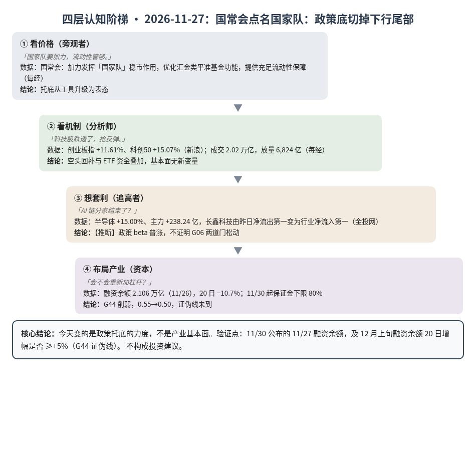
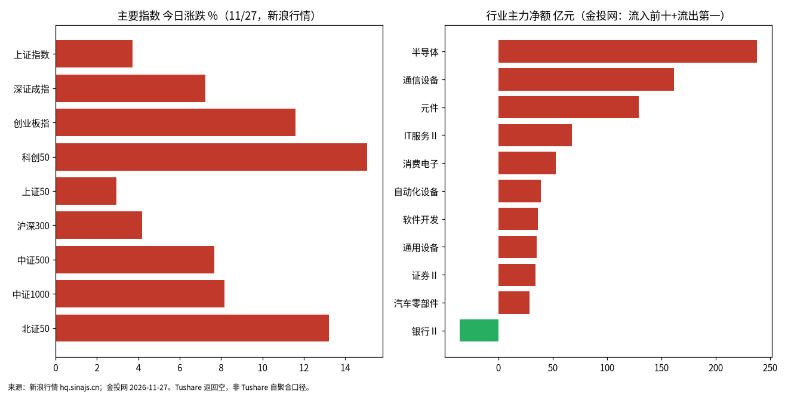
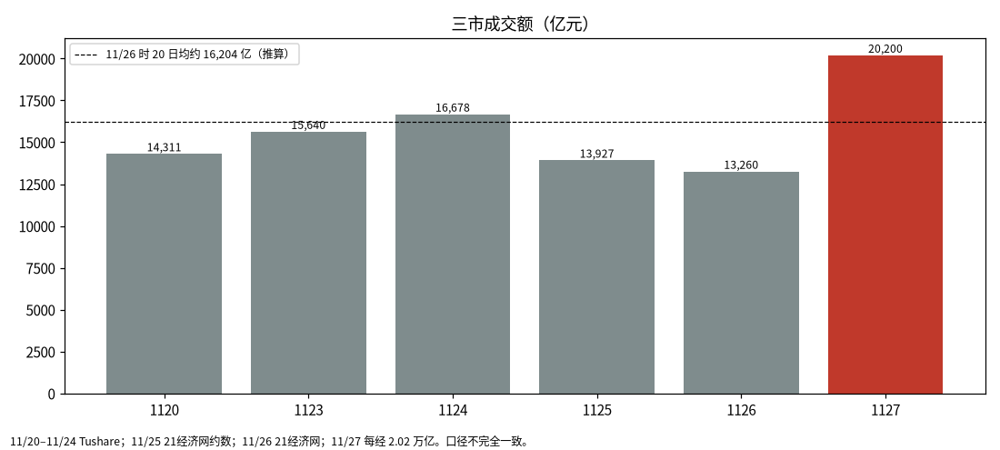

A股投研日报 · 2026-11-27（变化点版）
本报告为基于公开数据的研究分析，不构成投资建议。
方法：只写和昨天、上周比的变化点。Tushare 返回空，行情改用新浪、每经、金十等（见附录）。不构成投资建议。
今日市场概况
上证 +3.73% 收 3,606.49，深成 +7.24%，创业板 +11.61%，科创50 +15.07% 收 1,346.25，沪深300 +4.17%（新浪行情）；本周上证 +2.06%、创业板 +10.48%（新浪日线推算）。三市成交 2.02 万亿，放量 6,824 亿（每经），约为 20 日均的 1.25 倍（推算）；主力净流入 1,076.73 亿（金十，口径与昨日数据宝不同），银行主力净流出居行业首位（−35.51 亿，金投网）。恒生科技涨超 6%（每经）；VIX 最新 26.80（CBOE），未到 30。世界指标今日天气：整体多云，五盏灯本周没有变化。
变化点
-
托底从工具变成表态：国常会新闻稿第一次出现「国家队」，并要求汇金类平准基金「提供充足流动性保障」（每经）。市场此前怕托底力量退坡，今天这块下行尾部被切掉了推断。11/30 起融资保证金下限回到 80%，再加杠杆的门槛同时降低，所以 G44 从 0.55 调到 0.50；但融资余额 11/26 仍是 20 日 −10.7%（Tushare，经世界指标），离证伪线 +5% 很远，状态不改。
-
昨天的「AI 链分家」一天被抹平：半导体 +15.00%、主力净流入 238.24 亿，行业净流入最大股是昨天净流出第一的长鑫科技（金投网）。这是政策带来的普涨，不能当作 G06「两道门」松动的证据，国产卡卡在 HBM 和先进代工的事实没变。昨日验证点「科创50 收回 1,250」意外达成。
-
外部压力还在：CoreWeave 5 年 CDS 约 1,333bp（11/26），第二个名字甲骨文约 353bp，没有蔓延，P070 证伪线未触发。推断海外 AI 信用若再恶化，今天的政策底会迎来第一次检验。
中长期展望
不变；只有 G44 的方向在动：若 12 月融资余额转为快速回升，A 股的读法要从「去杠杆」改成「托底下再加杠杆」。
本报告为基于公开数据的研究分析，不构成任何投资建议。

一句话总结：政策把底托住了，接下来看杠杆会不会跟着回来。
附录：市场数据（证据底稿）


指数（新浪行情 hq.sinajs.cn，2026-11-27 收盘；成交为指数口径）
| 指数 | 收盘 | 今日% | 本周% | 成交(亿) |
|---|---|---|---|---|
| 上证指数 | 3,606.49 | +3.73 | +2.06 | 9,297.8 |
| 深证成指 | 10,814.02 | +7.24 | — | 10,700.2 |
| 创业板指 | 2,443.96 | +11.61 | +10.48 | 5,440.5 |
| 科创50 | 1,346.25 | +15.07 | +9.35 | 1,315.9 |
| 上证50 | 2,834.68 | +2.94 | — | 1,816.6 |
| 沪深300 | 4,063.06 | +4.17 | +2.74 | 6,143.4 |
| 中证500 | 6,313.63 | +7.68 | — | 3,328.1 |
| 中证1000 | 5,982.91 | +8.15 | — | 3,655.7 |
| 北证50 | 851.79 | +13.20 | — | 177.8 |
本周% = 11/27 收盘 ÷ 11/20 收盘（新浪日线 getKLineData）。
市场宽度与资金
| 项目 | 读数 | 来源 |
|---|---|---|
| 三市成交额 | 2.02 万亿，较上日放量 6,824 亿（新华财经口径 6,914 亿） | 每经收评、中国金融信息网 |
| 20 日均成交 | 11/26 时约 16,204 亿，今日约为其 1.25 倍 | 推算（沿用 11/26 附录口径） |
| 上涨 / 下跌 | 5,382 / 不足 190；涨停 426，跌停 0 | 中国金融信息网、每经 |
| 全 A 主力净额 | +1,076.73 亿（占成交 5.38%） | 金十数据（与昨日数据宝口径不同，不直接比较） |
| 行业主力 | 半导体 +15.00%、+238.24 亿；通信设备 +161.64 亿；元件 +129.27 亿；银行 −35.51 亿居流出首位 | 金投网 |
| 个股主力 | 中际旭创 +37.72 亿、新易盛 +29.21 亿、东山精密 +28.56 亿 | 证券时报数据宝（新浪转载） |
| ETF | 两市 ETF 成交 6,380.46 亿，较上日 +2,442.80 亿 | 21 经济网 |
| 港股 | 恒生科技涨超 6% | 每经 |
| VIX | 26.80（CBOE 文件 11/26 行），11/25 为 28.29 | CBOE VIX_History.csv |
| 融资余额 | 2.106 万亿（11/26），20 日 −10.7% | Tushare，经世界指标面板 |
| DDR5 16Gb 现货 | 60.57 美元（11/27），11/26 为 60.767 | 世界指标面板（TrendForce） |
| CoreWeave 5Y CDS | 约 1,333bp（11/26）；甲骨文约 353bp | 世界指标面板（qihan.ai / ICE） |
VIX 预警：warning.py 数据只到 11/23（26.62）；CBOE 最新收盘 26.80，未收上 30，最新交易日未首穿 20/25/30/35/40，按规则不写预警行。
总账：G44 0.55→0.50（削弱，状态不改）。打分：新打分 0 条 / 已到期未打分 0 / 14 天内到期 1（P071，12/10）/ 累计 Brier 0.0225（已打分 1 条）。
接口状态（今日）：Tushare trade_cal 与行情接口返回空，交易日由新浪行情确认（上证 2026-11-27 有成交）；fetch_v3.py 未跑，行情用新浪、每经、金十、金投网、21 经济网。世界指标今日 17:40 已更新并发布，五盏灯读数取自该次。龙虎榜、北向、11/27 融资余额未取得。